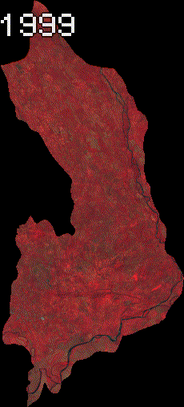

Javascript
Time Lapse (Landsat Images)
Time lapse animations, are an interesting tool used to visualize changes on the earth surface over time. The following animation is created by the code provided, and shows the changes over a 20 years period of time by the construction of a river dam in the province of Chiriqui, Republic of Panamá.

/**************************************************************************************************
* Downloading Image Chips for Hidroelectrica dos Mares
* Location: El Valle de Las Lomas, Chiriquí, Panamá
* Author: Roger Almengor González
* Data 26.09.2022
* Project: CAP 2022
* Land: Bayern
* ***********************************************************************************************/
// Feature Collection
var municipalities = ee.List(['Bijagual', 'Chiriquí', 'Cochea', 'David','Las Lomas','Gualaca', 'Rincón',
'Paja de Sombrero', 'Caldera', 'Dos Ríos', 'Los Anastacios', 'Dolega', 'Pedregal',
'San Pablo Viejo', 'San Pablo Nuevo', 'San Carlos', 'Hornito', 'Tinajas'])
var AOI = table.filter(ee.Filter.inList('NAME_3', municipalities));
var municipalities = AOI.filter(ee.Filter.eq('NAME_1', 'Chiriquí'));
var district_list = ee.List(['Gualaca', 'Boquete', 'Dolega', 'David'])
var municipalities = municipalities.filter(ee.Filter.inList('NAME_2', district_list))
print(AOI);
Map.addLayer(municipalities);
var cochea_district = table.filter(ee.Filter.eq('NAME_3', 'Chiriquí'))
var centroid_cochea_coor = cochea_district.geometry().centroid().coordinates().getInfo()
var x = centroid_cochea_coor[0];
var y = centroid_cochea_coor[1];
print(x);
print(y);
Map.setCenter(x, y, 12);
// Elaborating the dates
// Getting Temperatures for Every Month
var period = ['-01-01', '-12-01'];
var years = [['1999', '2000'],
['2000', '2001'],
['2001', '2002'],
['2002', '2003'],
['2003', '2004'],
['2004', '2005'],
['2005', '2006'],
['2006', '2007'],
['2007', '2008'],
['2008', '2009'],
['2009', '2010'],
['2010', '2011'],
['2011', '2012'],
['2012', '2013'],
['2013', '2014'],
];
var add_period = function(year){
var start_date = period[0];
var end_date = period[1];
return [year[0] + start_date, year[1] + end_date];
};
var visualization = {
bands: ['SR_B4', 'SR_B3', 'SR_B2'],
min: 0.0,
max: 0.4,
};
var visualization_ = {
bands: ['SR_B4_median', 'SR_B3_median', 'SR_B2_median'],
min: 0.0,
max: 0.4,
};
var concatenate_year_with_periods = function(years, period){
return years.map(add_period);
};
var Dates = concatenate_year_with_periods(years, period);
print(Dates);
/***********************************************************************
Landsat 5
************************************************************************/
// Applies scaling factors.
function applyScaleFactors(image) {
var opticalBands = image.select('SR_B.').multiply(0.0000275).add(-0.2);
var thermalBand = image.select('ST_B6').multiply(0.00341802).add(149.0);
return image.addBands(opticalBands, null, true)
.addBands(thermalBand, null, true);
}
var dataset = ee.ImageCollection('LANDSAT/LT05/C02/T1_L2')
.filterDate('1999-01-01', '2020-12-31')
.filterBounds(municipalities)
.map(applyScaleFactors)
.map(function(image){return image.clip(municipalities)});
/**************************************************************************************************
* Downloading Image Chips for Hidroelectrica dos Mares
* Location: El Valle de Las Lomas, Chiriquí, Panamá
* Author: Roger Almengor González
* Data 26.09.2022
* Project: CAP 2022
* Land: Panama
* ***********************************************************************************************/
// Feature Collection
//var municipalities = ee.List(['Bijagual', 'Chiriquí', 'Cochea', 'David','Las Lomas','Gualaca', 'Rincón',
// 'Paja de Sombrero', 'Caldera', 'Dos Ríos', 'Los Anastacios', 'Dolega', 'Pedregal',
// 'San Pablo Viejo', 'San Pablo Nuevo', 'San Carlos', 'Hornito', 'Tinajas'])
// Feature Collection
var municipalities = ee.List(['Bijagual','Cochea','Las Lomas'])
var AOI = table.filter(ee.Filter.inList('NAME_3', municipalities));
var municipalities = AOI.filter(ee.Filter.eq('NAME_1', 'Chiriquí'));
var district_list = ee.List(['Gualaca', 'Boquete', 'Dolega', 'David'])
var municipalities = municipalities.filter(ee.Filter.inList('NAME_2', district_list))
// Gets the bounds and create geometry
var extent = municipalities.geometry().bounds();
var buffered_extent = extent.buffer(ee.Number(10000).sqrt().divide(2), 1).bounds();
//var municipalities = geometry
Map.addLayer(municipalities);
var cochea_district = table.filter(ee.Filter.eq('NAME_3', 'Bijagual'))
var centroid_cochea_coor = cochea_district.geometry().centroid().coordinates().getInfo()
var x = centroid_cochea_coor[0];
var y = centroid_cochea_coor[1];
Map.setCenter(x, y, 10);
// Elaborating the dates
// Getting Temperatures for Every Month
var period = ['-01-01', '-12-01'];
var years = [['1999', '2000'],
['2000', '2001'],
['2001', '2002'],
['2002', '2003'],
['2003', '2004'],
['2004', '2005'],
['2005', '2006'],
['2006', '2007'],
['2007', '2008'],
['2008', '2009'],
['2009', '2010'],
['2010', '2011'],
['2011', '2012'],
['2012', '2013'],
['2013', '2014'],
];
var add_period = function(year){
var start_date = period[0];
var end_date = period[1];
return [year[0] + start_date, year[1] + end_date];
};
var visualization = {
bands: ['SR_B4', 'SR_B3', 'SR_B2'],
min: 0.0,
max: 0.4,
};
var visualization_ = {
bands: ['SR_B4_median', 'SR_B3_median', 'SR_B2_median'],
min: 0.0,
max: 0.4,
};
var concatenate_year_with_periods = function(years, period){
return years.map(add_period);
};
var Dates = concatenate_year_with_periods(years, period);
/**********************************************************************
Landsat 7
***********************************************************************/
var visualization = {
bands: ['B4', 'B3', 'B2'],
min: 0.0,
max: 0.3,
};
var visualization_ = {
bands: ['B4_median', 'B3_median', 'B2_median'],
min: 0.0,
max: 0.5,
gamma: [0.95, 1.1, 1]
};
// Applies scaling factors.
var cloudMaskL7 = function(image) {
var qa = image.select('BQA');
var cloud = qa.bitwiseAnd(1 << 4)
.and(qa.bitwiseAnd(1 << 6))
.or(qa.bitwiseAnd(1 << 8));
var mask2 = image.mask().reduce(ee.Reducer.min());
return image
//.select(['B3', 'B4'], ['Red', 'NIR'])
.updateMask(cloud.not()).updateMask(mask2)
.set('system:time_start', image.get('system:time_start'));
};
var dataset = ee.ImageCollection('LANDSAT/LE07/C01/T1_TOA')
.filterDate('1999-01-01', '2020-12-31')
.filterBounds(AOI)
//.map(applyScaleFactors)
.map(cloudMaskL7)
.map(function(image){return image.clip(municipalities)});
//dataset = dataset.map(applyScaleFactors);
// Creating composites using median pixel value
var median_yearly_landsat_7 = function(start, end){
var dataset_ = dataset.filter(ee.Filter.date(start, end));
var median_yearly = dataset_.reduce(ee.Reducer.median());
return median_yearly;
};
var composite_name_list_l7 = ee.List([]);
var apply_monthly_composite = function(date_list){
var start = date_list[0];
var end = date_list[1];
var output_name = start + "TO" + end + "_LANSAT_7";
var composite = median_yearly_landsat_7(start, end);
composite_name_list_l7 = composite_name_list_l7.add([composite, output_name]);
Map.addLayer(composite, visualization_, output_name, false);
Export.image.toDrive({
image: composite,
description: output_name,
fileFormat: 'GeoTIFF',
crs : 'EPSG:4326',
folder : 'LANDSAT_LST_LAS_LOMAS',
region: municipalities
});
return 0;
};
Dates.map(apply_monthly_composite);
/******************************************************************
// Animation gif
// Create RGB visualization images for use as animation frames.
/******************************************************************/
var text = require('users/gena/packages:text');
var annotated_collection_list = ee.List([])
var annotations = [
{position: 'left', offset: '0.25%', margin: '0.25%', property: 'label', scale: 250} //large scale because image if of the whole world. Use smaller scale otherwise
];
var create_annotated_collection = function(image_and_id) {
var img = image_and_id[0];
var image_id = image_and_id[1];
print(image_id);
var img_out = img.visualize(visualization_)
//.clip(geometry)//.paint(municipalities, 'FF0000', 2)
.set({'label': image_id});
Map.addLayer(img_out);
var annotated = text.annotateImage(img_out, {}, Bayern, annotations);
annotated_collection.add(annotated);
return 0;
};
var municipalities_geom = geometry;
var n = composite_name_list_l7.size().getInfo();
print(n);
for (var i = 0; i < n; i++) {
var img_info = ee.List(composite_name_list_l7.get(i));
print(img_info);
var img = ee.Image(img_info.get(0));
var img_id = ee.String(img_info.get(1));
var year = ee.String(ee.List(img_id.split("-").get(0)));
var month = ee.String(ee.List(img_id.split("-").get(1)));
var img_id_ = year.getInfo() // + "_" + month.getInfo();
var img_out = img.visualize(visualization_)
//.paint(geometry, 'FF0000', 2)
.set({'label': img_id_});
var annotated = text.annotateImage(img_out, {}, buffered_extent, annotations);
Map.addLayer(annotated);
var annotated_collection_list = annotated_collection_list.add(annotated)
}
var annotated_col = ee.ImageCollection(annotated_collection_list)
// Define GIF visualization parameters.
var gifParams = {
'region': buffered_extent,
'dimensions': 508,
//'crs': 'EPSG:32632',
'framesPerSecond': 1
};
// Print the GIF URL to the console.
print(annotated_col.getVideoThumbURL(gifParams));
// Render the GIF animation in the console.
print(ui.Thumbnail(annotated_col, gifParams));